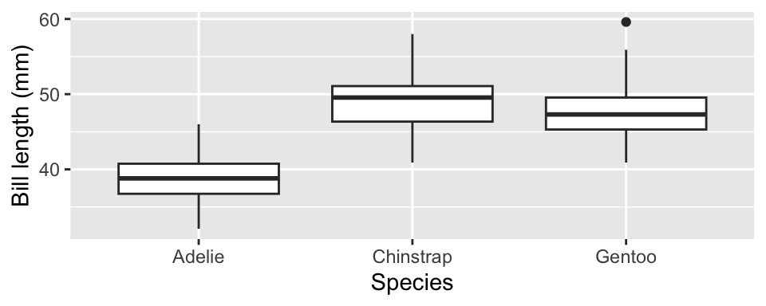
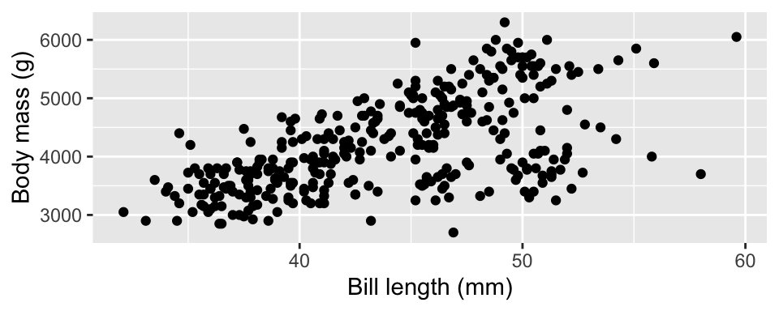

library(ggplot2)
suppressMessages(library(dplyr))
df <- read.csv("https://raw.githubusercontent.com/roualdes/data/refs/heads/master/penguins.csv")Quiz 02
Consider this data set about penguins. We’ll use the variables species, bill_length_mm, and body_mass_g. The bill lengths are measured in millimeters and body mass is measured in grams.
ggplot(data = df, aes(species, bill_length_mm)) +
geom_boxplot() +
labs(x = "Species", y = "Bill length (mm)")Warning: Removed 2 rows containing non-finite outside the scale range
(`stat_boxplot()`).
fit <- lm(bill_length_mm ~ species, data = df)
anova(fit)Analysis of Variance Table
Response: bill_length_mm
Df Sum Sq Mean Sq F value Pr(>F)
species 2 7194.3 3597.2 410.6 < 2.2e-16 ***
Residuals 339 2969.9 8.8
---
Signif. codes: 0 '***' 0.001 '**' 0.01 '*' 0.05 '.' 0.1 ' ' 1Write appropriately matching hypotheses for the model (and plot) above.
Use the output above to conclude the hypothesis test. Justify your conclusion, citing a p-value.
What does your conclusion mean in English?
summary(fit)
Call:
lm(formula = bill_length_mm ~ species, data = df)
Residuals:
Min 1Q Median 3Q Max
-7.9338 -2.2049 0.0086 2.0662 12.0951
Coefficients:
Estimate Std. Error t value Pr(>|t|)
(Intercept) 38.7914 0.2409 161.05 <2e-16 ***
speciesChinstrap 10.0424 0.4323 23.23 <2e-16 ***
speciesGentoo 8.7135 0.3595 24.24 <2e-16 ***
---
Signif. codes: 0 '***' 0.001 '**' 0.01 '*' 0.05 '.' 0.1 ' ' 1
Residual standard error: 2.96 on 339 degrees of freedom
(2 observations deleted due to missingness)
Multiple R-squared: 0.7078, Adjusted R-squared: 0.7061
F-statistic: 410.6 on 2 and 339 DF, p-value: < 2.2e-16- Use the output above to calculate and interpret, in context of the data, an intercept for the Species Chinstrap.
ggplot(data = df, aes(bill_length_mm, body_mass_g)) +
geom_point() +
labs(x = "Bill length (mm)", y = "Body mass (g)")Warning: Removed 2 rows containing missing values or values outside the scale range
(`geom_point()`).
fit <- lm(body_mass_g ~ bill_length_mm, data = df)
summary(fit)
Call:
lm(formula = body_mass_g ~ bill_length_mm, data = df)
Residuals:
Min 1Q Median 3Q Max
-1762.08 -446.98 32.59 462.31 1636.86
Coefficients:
Estimate Std. Error t value Pr(>|t|)
(Intercept) 362.307 283.345 1.279 0.202
bill_length_mm 87.415 6.402 13.654 <2e-16 ***
---
Signif. codes: 0 '***' 0.001 '**' 0.01 '*' 0.05 '.' 0.1 ' ' 1
Residual standard error: 645.4 on 340 degrees of freedom
(2 observations deleted due to missingness)
Multiple R-squared: 0.3542, Adjusted R-squared: 0.3523
F-statistic: 186.4 on 1 and 340 DF, p-value: < 2.2e-16Write appropriately matching hypotheses for the intercept for the model (and plot) above.
Use the output above to conclude the hypothesis test. Justify your conclusion, citing a p-value.
Interpret the intercept in context of the data.
Interpret the slope in context of the data.
What units does the slope have?
confint(fit) 2.5 % 97.5 %
(Intercept) -195.02364 919.6371
bill_length_mm 74.82279 100.0078- Use the output above to interpret a confidence interval for a term of your choice in context of the data.
predict(fit, newdata = data.frame(bill_length_mm = c(40, 10))) 1 2
3858.918 1236.459 Interpret a prediction in context of the data.
One of the two predictions is generally considered unreasonable. Which and why?